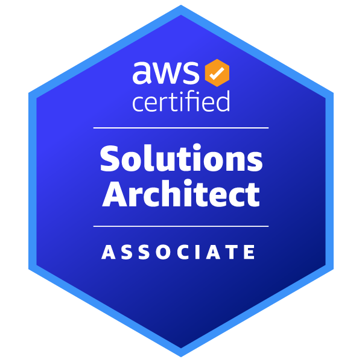
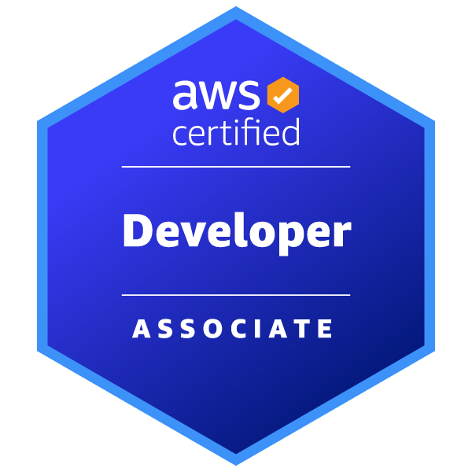
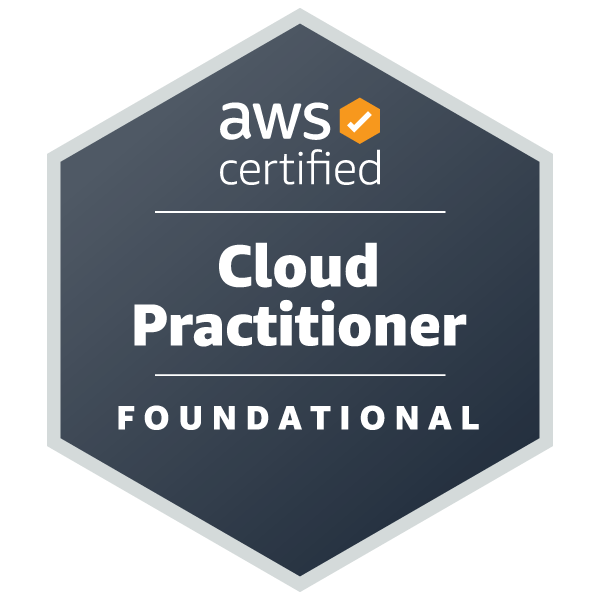
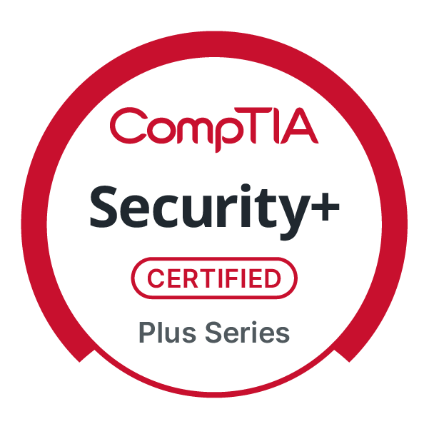
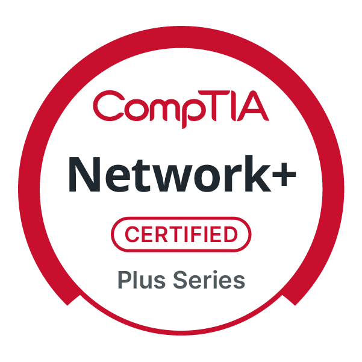
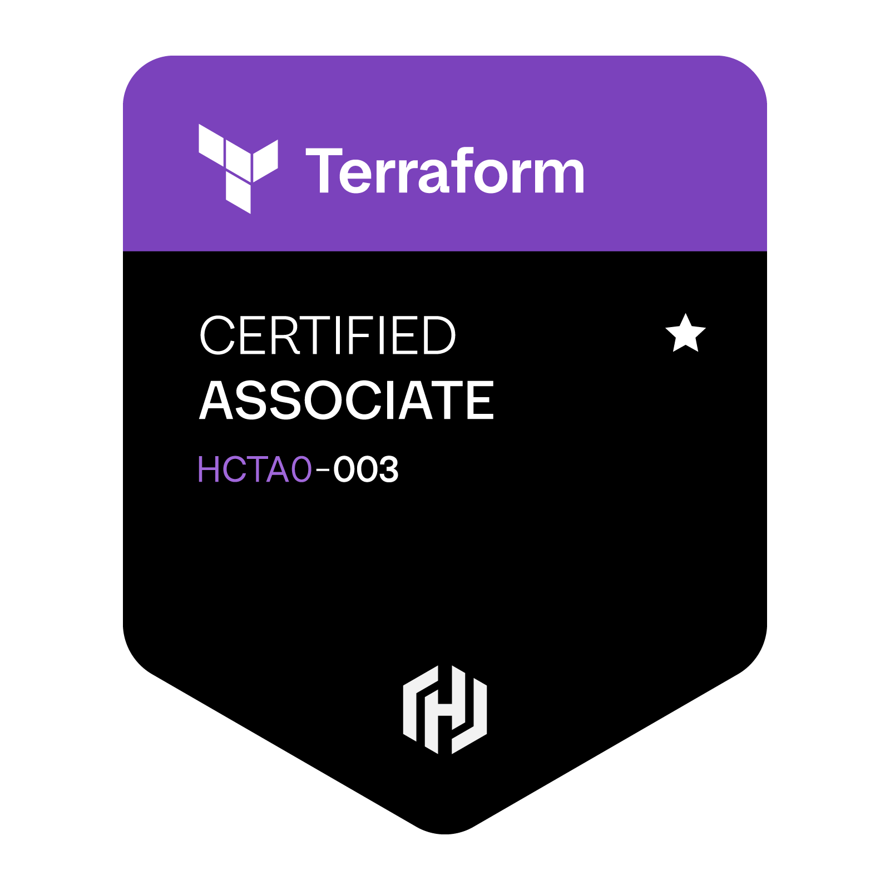

The person behind the projects
Hi, I’m Ubong.
A student of security, a builder of interfaces, and an enthusiastic learner.

Making technology easier to trust.
I’m pursuing a degree in cybersecurity at Miva University, where I’m building the foundation for a career in cloud security. Alongside my studies, I work as a frontend engineer, shaping dependable product experiences and learning how decisions at the interface connect to the systems underneath.
I’m especially interested in identity, secure cloud infrastructure, and the practical work that keeps applications resilient. I bring curiosity, patience, and a bias toward understanding the whole system.
Get in touchMy studies
Education & direction
| Area | Details |
|---|---|
| University | Miva University |
| Program | Cybersecurity |
| Expected graduation | 2029 |
| Career aspiration | Cloud Security Engineer |
Tools I use
Technical skills
My current practice spans product interfaces and the systems around them.
- JavaScript & TypeScript
- React & Next.js
- Python
- AWS
- Terraform
- Application security
- API design
- Responsive UI
- Git & GitHub
Learning milestones
Certifications
Cloud, security, and infrastructure credentials that support my systems perspective.

AWS Certified Solutions Architect – Associate
AWS Certified Developer – Associate
AWS Certified Cloud Practitioner
CompTIA Security+
CompTIA Network+
HashiCorp Certified: Terraform Associate
Away from the screen
Things I enjoy
- Traveling
New places, new perspectives, and a good reason to get curious.
- Reading
Making space for new ideas, one chapter at a time.
- Working out
Building consistency and keeping a clear head.
What’s next
Learning the cloud, one layer at a time.
My goal is to combine practical engineering experience with cybersecurity study and grow into a cloud security role.